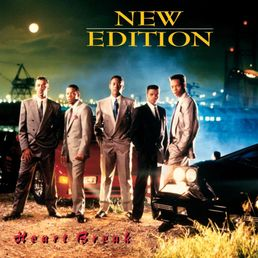

Project 1: Movie Page
This project is based on the movie The Photograph (2020). I chose this film because of its themes of love, memory, and art — which connect directly to the meaning behind its title.
The story stood out to me because it shows how a single photograph can uncover emotions, family history, and relationships that shape people’s lives.
👉 If you want the full breakdown, cast details, and my complete review, visit the full movie page:
Project 2: Music Review

This project is based on my favorite music group New Edition. I chose them because of their originality, influence, and the way their music tells real emotional stories.
One interesting connection in music history is that the group Boyz II Men actually took inspiration for their name from a New Edition song, which shows how influential their sound really was.
👉 If you want my full review, top songs, and the audio clip of my thoughts, visit the full music page: